Game hub
Small game prototypes. Pick one to play.
-
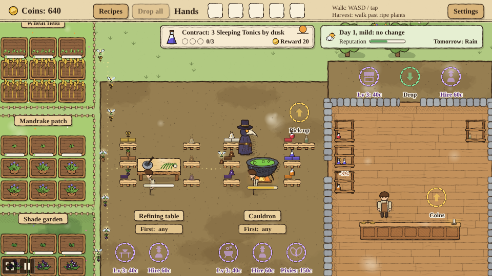
Apothecary
Run a medieval apothecary as a plague doctor: grow herbs, refine them, brew potions and sell them.
-
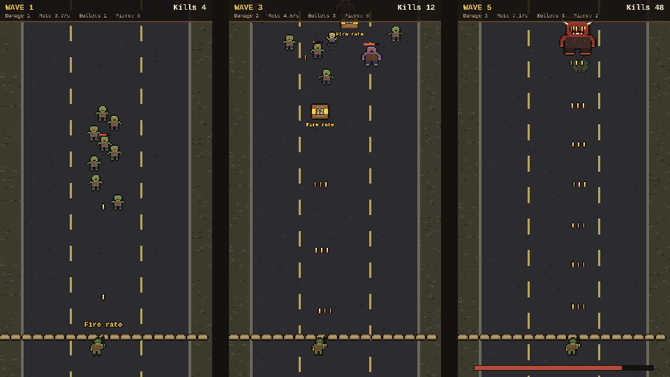
Deadline
Hold the bottom of the road against waves of zombies: move left and right, and shoot crates open for upgrades.
-
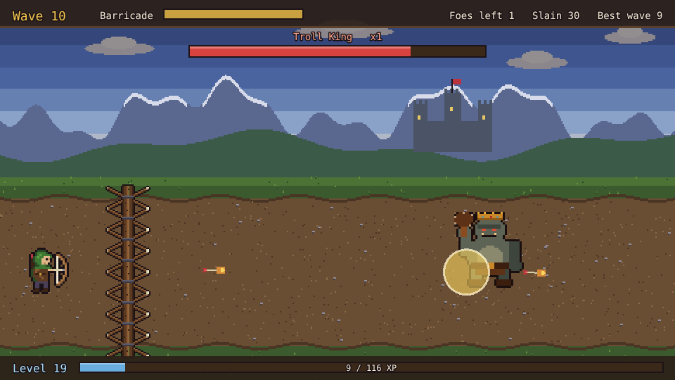
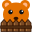
PalisadeHold the barricade as a ranger: arrows fly on their own, every level-up offers three upgrades, and a boss comes every ten waves.
-
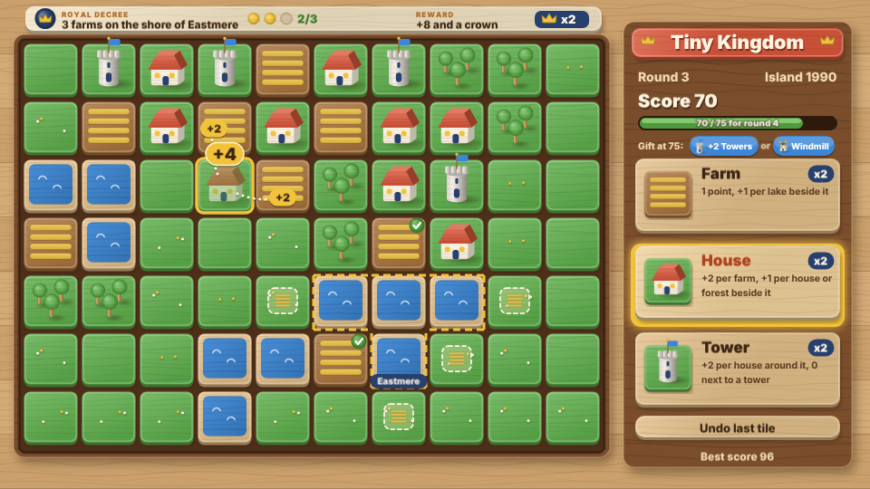
Tiny Kingdom
Place farms, houses and towers on a small island. Each one scores against its neighbours, so plan the layout before the tiles run out.
-
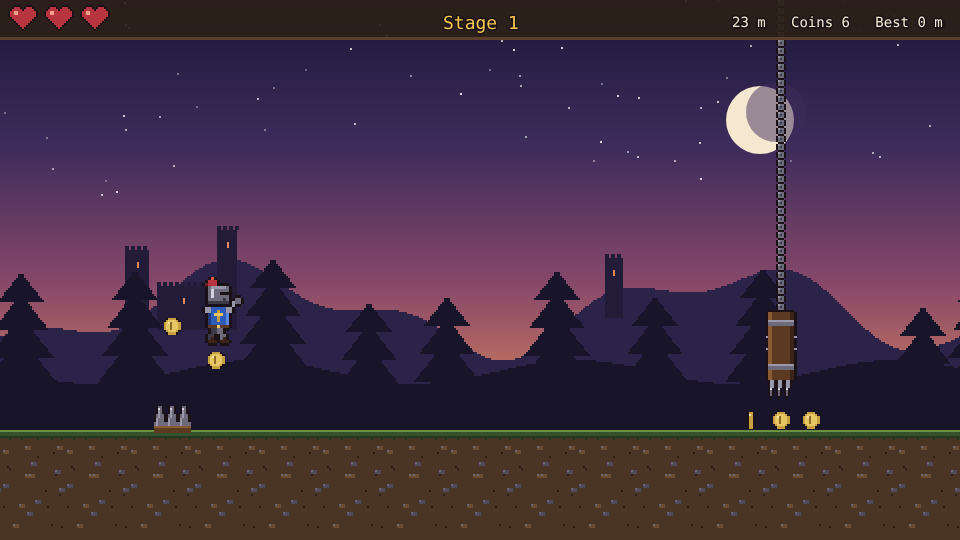
Hotfoot
Run as a knight who never stops: tap to jump spikes and pits or slide under blades, and pick one of two boons at every checkpoint.
-
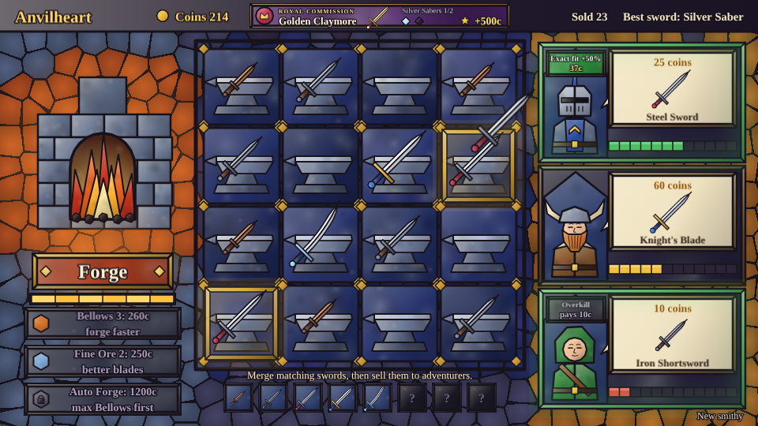
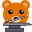
AnvilheartRun a smithy: forge swords, drag matching ones together to merge them into better blades, and sell them to adventurers.
-
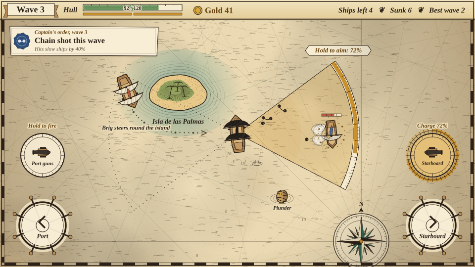
Broadside
Captain a pirate ship: steer left and right, fire broadsides at enemy ships, and spend the plunder on your ship between waves.
-
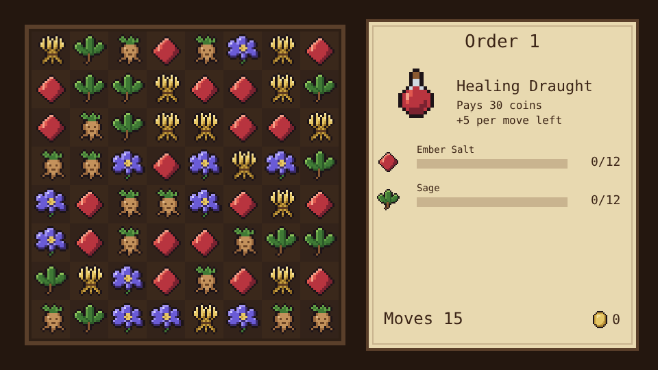
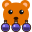
TinctureTinkerSwap ingredients to match three or more and gather what each potion order asks for before the moves run out.
-

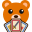
CatacombFight through a short dungeon with a deck of cards: play a hand of five each turn, and add a new card after every fight.
-
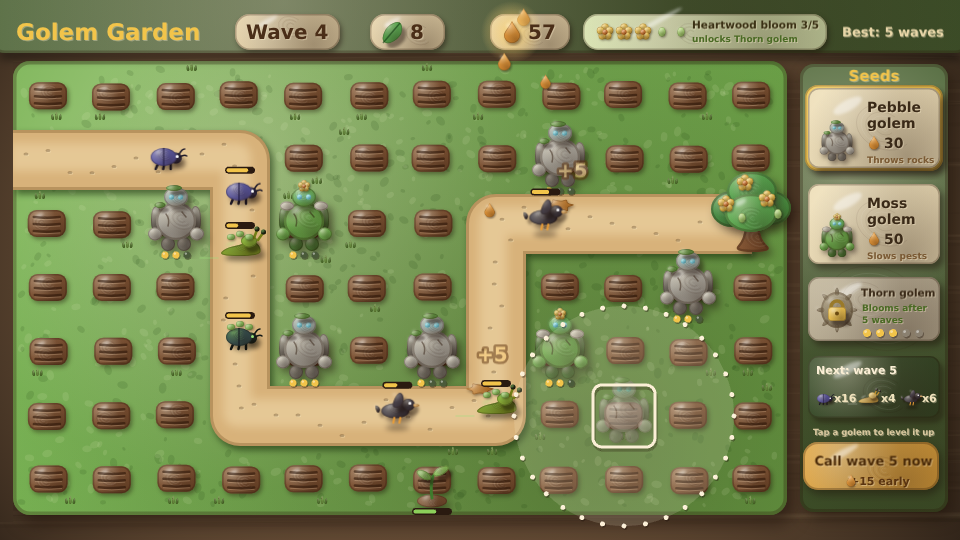
Golem Garden
Plant seeds beside the garden path that grow into golems, and keep the pests away from the Heartwood wave after wave.
-
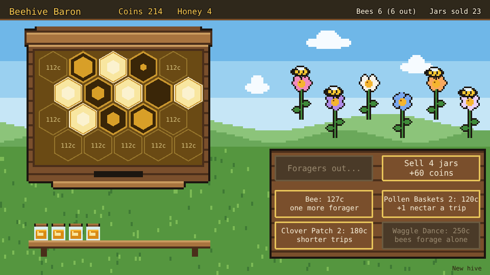
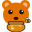
Beehive BaronRun a hive: build comb cells, send foragers out to the flowers, harvest the honey and sell it to grow your colony.
-
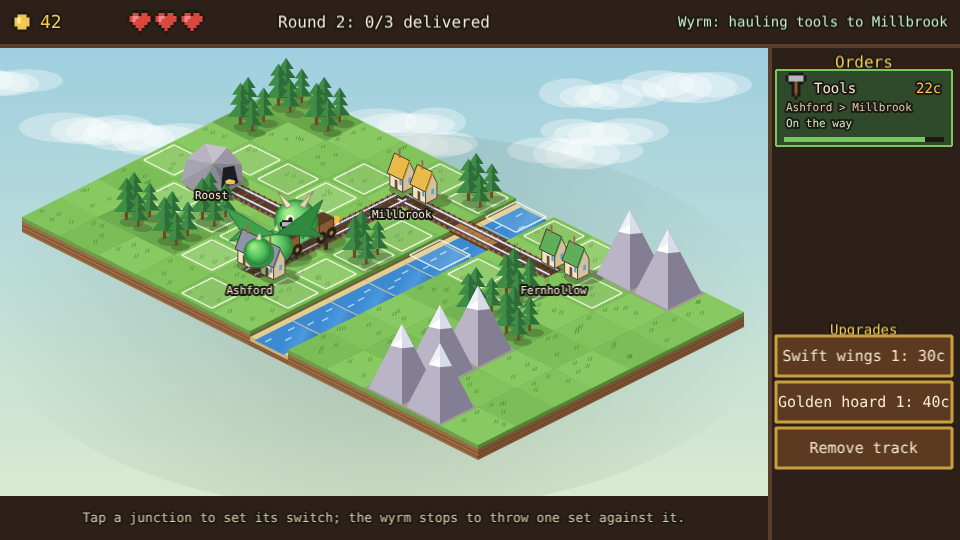
Wyrmrail
Lay track across a valley and send a dragon-drawn train to carry cargo between villages before each order runs out of time.
-
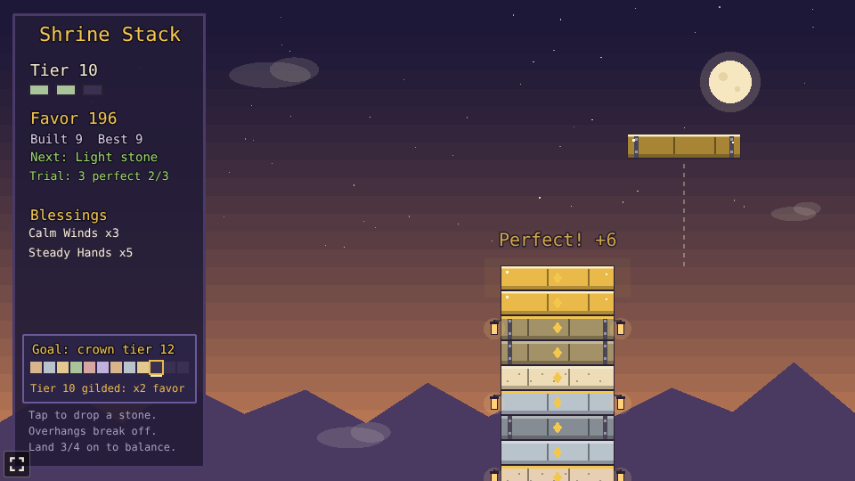
Shrine Stack
Drop swinging stones to stack a temple: overhangs break off, and every balanced tier of three earns a blessing.
-
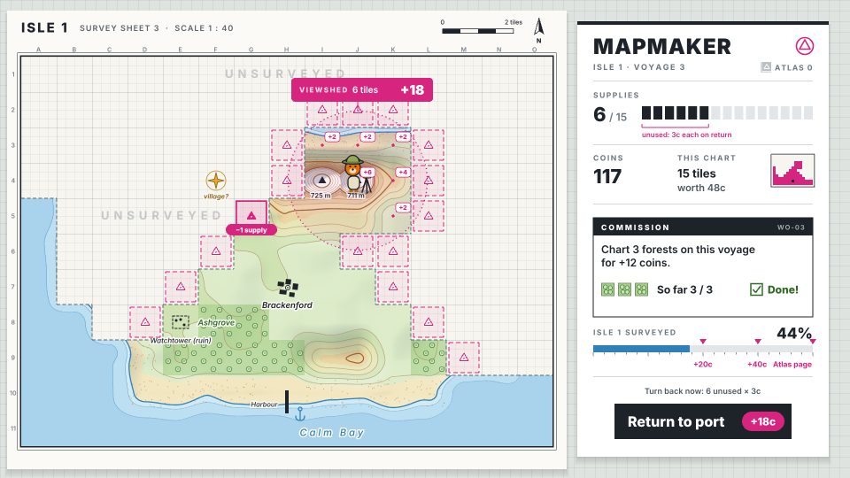
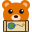
MapmakerReveal a fog-covered island tile by tile on a limited store of supplies, and trade your charts at port for upgrades.
-
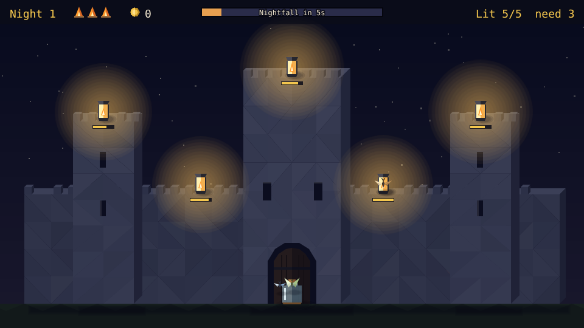
Lanternkeep
Send moths from their jar to light the castle's lanterns before night falls, and spend the coins on wicks, oil and more moths.
-
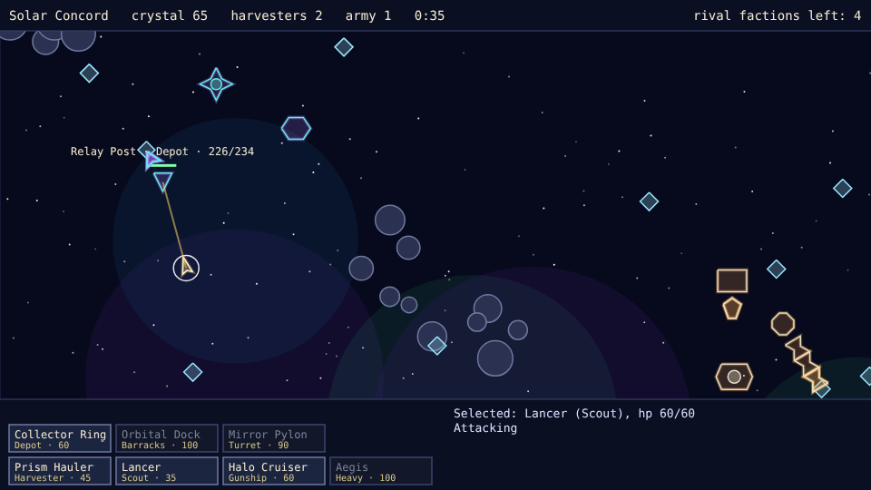
Space Wars
Build a base on a random star map, mine crystal and raise a fleet to take down four rival factions, each with its own ships and buildings.
-
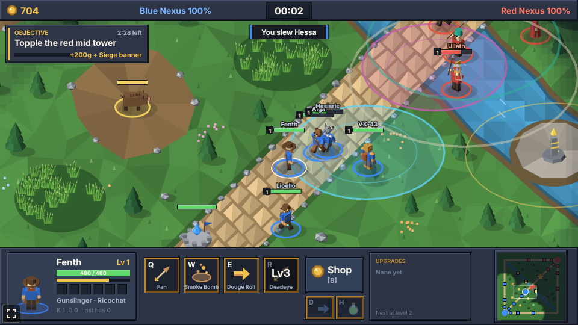
Lane Brawl
Lead a team of five champions down three lanes against NPC teams: farm, level up, buy items, push the lanes and destroy the enemy Nexus.
-
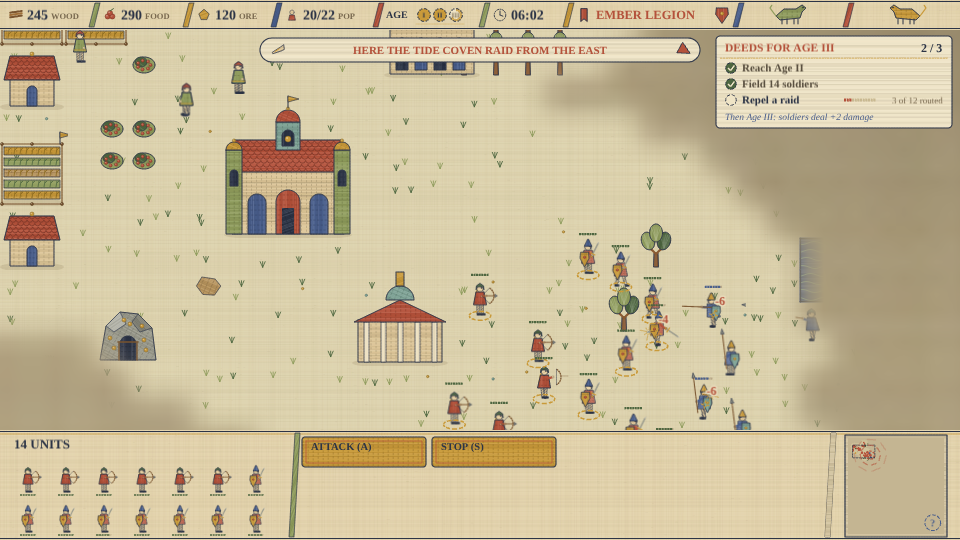
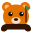
ColonizerBuild a pixel-art empire: gather wood, food and ore, raise buildings and armies, research techs, and destroy the enemy Town Center before it destroys yours.